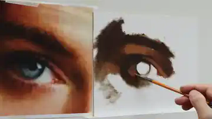

Construction and proportion
How to reduce the subject to points, lines, angles and proportional shapes.
A focused 3.5-hour oil-painting tutorial that breaks a complex study into construction, shadow shapes, values, colour and three-dimensional form.

This page is currently a private preview and is not indexed by search engines. The purchase button will be activated once the English voice-over, English downloads and checkout flow are ready.
Instead of trying to “paint an eye” all at once, you solve one visual problem at a time. A demanding realistic study becomes a sequence of observable and measurable decisions.

Key points, angles, proportions and large shapes.

Organise light and shadow, then establish the main colour relationships.
Gradients, edges and details that create the sensation of volume.
How to reduce the subject to points, lines, angles and proportional shapes.
How to identify large and smaller shadow masses and place them accurately.
The orbital cavity, eyelids and surrounding facial structure as a basis for painting.
How changes in value follow the turning of the surface relative to the light.
How planes, values and softened edges create a convincing three-dimensional effect.
Value, hue and chroma, with a practical method for adjusting mixtures in light and shadow.
The PDFs are designed to stay beside you while you work, as a quick visual reference for the principles demonstrated in the video.
Construction, anatomy, shadow shapes, value gradients, modelling form, palette and colour mixing.
A visual guide to measuring, transferring angles and constructing proportional complex shapes.
A practical overview of painting materials and colours to prepare before starting the tutorial.
“You do not need to paint at this level already. First break a difficult image into problems you can observe, measure and solve step by step.”
The focus is on construction, proportion, values, planes, colour relationships and modelling form. The aim is not simply to copy a demonstration, but to understand principles you can transfer to other subjects.
The landing page and English PDF editions are being prepared now. The purchase flow will be activated after the English voice-over and customer downloads are in place.
Yes. The English edition is planned to include all three English PDF study guides.
The complete tutorial is approximately 3.5 hours long.
Yes. The process is divided into clear stages while still offering enough depth for more experienced artists.
The video is intended for online viewing; the accompanying PDF study guides will be available to customers as downloads.
3.5-hour English video tutorial + 3 English PDF study guides.